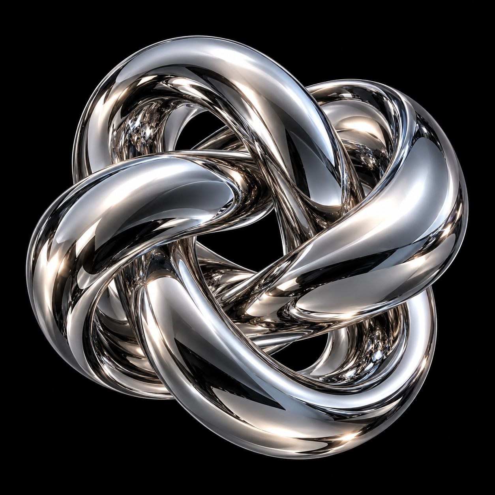

01 / Awakening
The beginning
BEYOND INTERACTION
하나의 문장에서, 새로운 감각이 시작됩니다.
아래로 스크롤해 이야기를 시작하세요.
02 / Dimension
A different perspective
A new
dimension.

평면을 벗어나, 형태와 공간 사이를 바라봅니다.스크롤로 조각을 펼치고, 마우스로 시선을 바꿔보세요.
03 / Typography
Words become form
WORDS TAKE SHAPE
04 / Matter
Beyond the surface
Beyond the surface.
단단한 경계 너머, 새로운 질감을 상상합니다.
05 / Journey
A change of scenery
A story. Many perspectives.
빛을 따라, 새로운 시선으로.
06 / Magnetic
An invisible force.
07 / Weight
The weight of attention.
The rabbit-hole went straight on like a tunnel for some way, and then dipped suddenly down, so suddenly that Alice had not a moment to think about stopping herself before she found herself falling down a very deep well. Either the well was very deep, or she fell very slowly, for she had plenty of time as she went down to look about her and to wonder what was going to happen next. First, she tried to look down and make out what she was coming to, but it was too dark to see anything; then she looked at the sides of the well, and noticed that they were filled with cupboards and book-shelves; here and there she saw maps and pictures hung upon pegs.